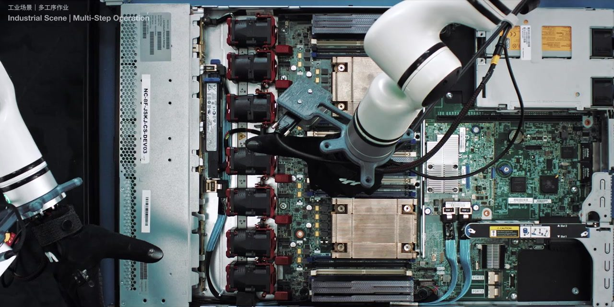
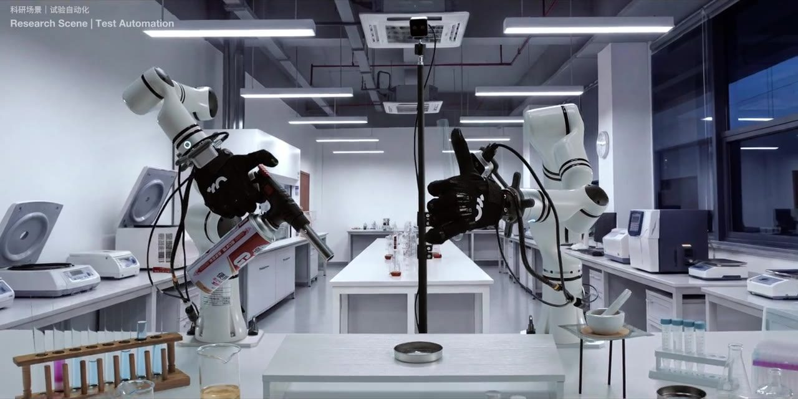
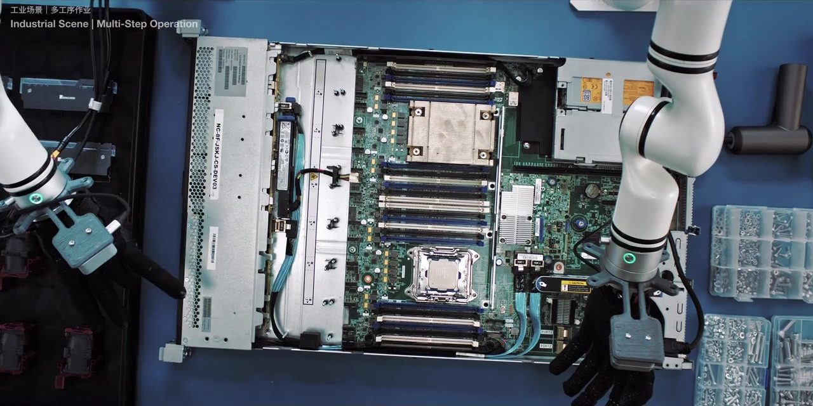
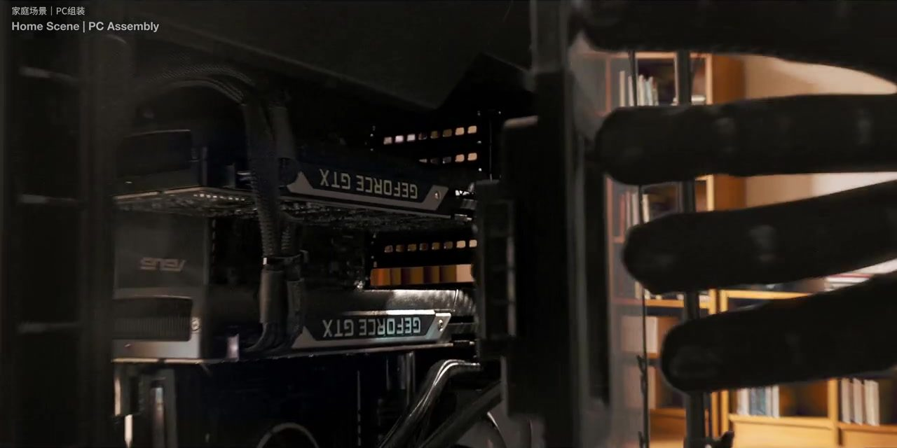

在模型里
算得准
在产线上
干得成
日冕机器人 RIMBOT
2026 年 3 月成立于北京
物理世界基础模型
与全栈解决方案公司
这个世界模型在算什么
先在心里把动作
演一遍
LaMPA 走的是隐式掩码预测路线，不是生成像素，而是在隐空间里做预测。它把物理世界拆成 E³ 三重表征——环境（Environment）、本体（Ego）、经验（Experience）——统一编码进同一个高维隐空间，让机器人在动手之前，先把接下来会发生什么推演一遍。
同一套模型还兼着操作系统：多模态环境理解、任务推演、策略学习，Model as OS。团队为它设计了更适合规模化训练的块扩散结构，并把 VLA 推理延迟从 130 毫秒压到 32 毫秒。
强化学习那一侧配了两位一体的搭档：WPM 世界策略模型负责生成初始动作，WRM 世界奖励模型负责判断这一步是成功、进行中还是失败，让机器人在真实反馈里继续练。
- 创始团队
- 四位清华博士。CEO 肖中阳主导过蔚来 NWM 世界模型交付，联合创始人钟元鑫主导华为 ADS 智驾世界模型基模量产
- 量产交付
- NWM 1.0 搭载超 70 万辆蔚来量产车，为行业首个复杂交互场景量产的世界模型；团队另有首批具身机器人进厂落地经验
- 团队规模
- 90 余人，来自华为、蔚来、智元，以及大语言模型公司与传统自动化领域
- 数据体系
- 开源全球首个多场景双手全掌触觉数据集 PalmDex；自采 + 众包 + 模型增强三路并行，已有 10 万量级高价值数据
这条产线上发生了什么
进厂，上工位，
不停机
2026 年 9 月 16 日，东莞东坑。远图没有被改造过的 ICT 工位上，一台具身智能机器人直接上岗，连续完成两类物料的上下料作业。
现场工程师故意挪动料盘，视觉系统重新定位、自主调整手臂轨迹继续抓取；托盘里混进非当前工单的物料，它识别出来后跳过，其余处理完，整盘自动退回上料区。全程没有停机。
交付形态也不止一台机器：超级工站由三块拼成——Workflow Agent 把工艺拆成可执行的任务，硬件橱窗提供双臂立柱、单臂四轮、双足移动等多种本体与末端，敏捷部署平台「彗星」把采集、训练、推理、部署串成一条线。客户拿到的不是设备，是一个能被教会新活的工位。

模型预测的轨迹
平滑，漂亮，
在隐空间里
预测得好看不难。难的是这条线落到钢、铝和塑料上之后，还剩下多少。
产线实测的轨迹
有抖动，有延迟，
但它算数
力触觉、标定误差、通信延迟——真实世界从不按剧本走。日冕坚持所有模型最终要在真机上验证，不拿纯仿真 Demo 交差。
这家公司是谁
七个月，
从组队到进厂
-
日冕开物（RIMBOT）在北京成立，模型为核心的具身智能全栈路线。创始团队是四位清华博士：肖中阳、钟元鑫、王云龙、戴亚奇。
-
连续完成两轮种子轮融资，合计数亿元。鼎峰科创、远图未来、百度风投、沃衍资本、武岳峰科创、万林国际参与，新一轮融资同步交割中。
-
技术体系对外成形：7 月 1 日发布 WRM 世界奖励模型与 WPM 世界策略模型；7 月 8 日公开 LaMPA 与 E³ 三重表征；7 月 14 日公布 VLA 推理优化，延迟从 130ms 降到 32ms。
-
与广东远图未来科技签署战略合作，「超级工站」计划启动，目标 2027 年百台级、2030 年万台级机器人集群。
-
超级工站公开 POC 验证成果发布；远图 & 日冕工业具身智能联合实验室在东莞东坑揭牌，国内首个面向 AI 服务器制造的工业具身智能联合实验室。
-
正式入驻北京和盈中心（海淀清河），团队扩至 90 余人，进入招人与规模化交付并行阶段。
来源：硬氪、凤凰网科技、雷峰网、新华网广东频道、和盈中心官方 · 截至 2026-10-28
2026 年 9 月 16 日 · 东莞东坑 · 现场披露 ／ 10 月更新
不是路线图，
是已经跑出来的数
- ±0.05mm ICT 探针与测试点对位精度
- 99% 上下料与装配任务成功率
- 15分钟 新物料切换耗时（此前以周计）
- 32ms VLA 推理延迟，优化前为 130ms
- 90+ 人 团队规模（2026 年 10 月）
- 万台级 2030 年部署目标，2027 年先做百台级

于是
两件事
合成一件

现在在招
我们还在找
把缝收窄的人
- 后训练 InfraCo-Founder 级 · 训练框架 / 效率优化
- VLA 后训练与预训练算法专家 · 具身智能
- 机器人云平台工程师 · 上海浦东
- 软件架构 / 电子电气架构全栈硬件与系统
- 具身数据算法采集体系与数据闭环